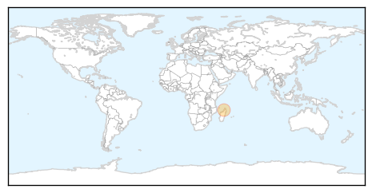

Measles
30-Day Web Trend
3 alerts, 1 warnings

30-Day Twitter Trend
0 alerts, 0 warnings

Article Locations

Article Confidences

Top Articles:
- 0.811
- Measles: Hundreds in Perth could have been exposed to virus during man's contagious phase
- 0.716
- In Haiti, A Hospital Designed with Women in Mind - Haiti
- 0.713
- Michigan adds new requirement for parents who want vaccine waivers
- 0.690
- Vaccine Waivers Harder to Get Under New Rules
- 0.574
- Still no alternative to the theory that Columbus brought syphilis across the Atlantic
- 0.517
- Syphilis sailed the ocean blue: why a bent femur won’t overturn Columbus theory
- 0.501
- Disabled by Pakistan's criminally negligent doctors
Top Tweets:
-
No tweets found for Dec 12, 2014
Bubonic Plague
30-Day Web Trend
7 alerts, 0 warnings

30-Day Twitter Trend
1 alerts, 0 warnings

Article Locations
Article Confidences

Top Articles:
Top Tweets:
-
No tweets found for Dec 12, 2014